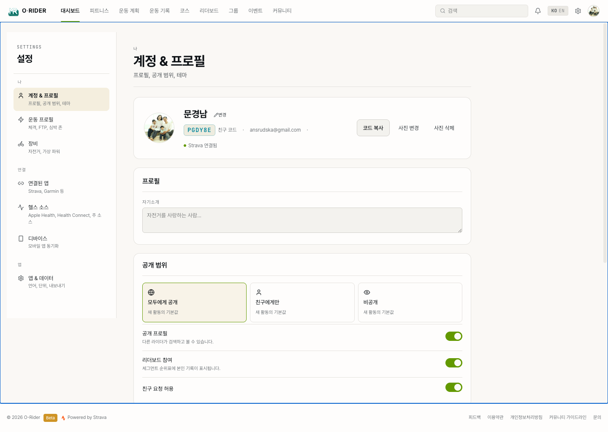

10. 설정
이 섹션의 목적
프로필, 운동 프로필, 장비, 연결, 데이터 관리 등 계정 전반을 조정하는 것. 설정 페이지는 왼쪽 사이드바의 탭으로 영역이 나뉘며, 크게 나 / 연결 / 앱 세 그룹으로 묶여 있습니다.

설정 화면 구조
탭 구성
| 그룹 | 탭 | 설명 |
|---|---|---|
| 나 | 계정 & 프로필 | 프로필, 공개 범위, 테마 |
| 운동 프로필 | 체격, FTP, 심박 존 | |
| 장비 | 자전거, 가상 파워 | |
| 연결 | 연결된 앱 | Strava, Garmin 등 |
| 헬스 소스 | Apple Health, Health Connect, 주 소스 | |
| 디바이스 | 모바일 앱 동기화 | |
| 앱 | 앱 & 데이터 | 언어, 단위, 내보내기 |
10.1 계정 & 프로필
프로필
| 항목 | 방법 | 반영 범위 |
|---|---|---|
| 닉네임 변경 | 프로필 카드 상단 닉네임 옆 변경 | 피드, 리더보드, 댓글 등 모든 곳에 반영 |
| 프로필 사진 | 사진 변경 클릭하여 이미지 업로드 | 모든 프로필 표시 영역에 반영 |
| 친구 코드 복사 | 코드 복사 클릭 | 다른 라이더에게 공유하면 친구 추가 가능. 앱·웹 공통 |
| 자기소개 | 자기소개 입력 (포커스 해제 시 저장) | 프로필 페이지에 표시 |
공개 범위
새 활동의 기본 공개 범위를 선택합니다.
| 설정 | 의미 |
|---|---|
| 모두에게 공개 | 모든 사용자가 볼 수 있음. 리더보드 참여 가능 |
| 친구에게만 | 친구만 볼 수 있음 |
| 비공개 | 본인만 볼 수 있음 |
아래 토글로 세부 공개 설정을 조정합니다:
- 공개 프로필 — 다른 라이더가 검색하고 볼 수 있습니다.
- 리더보드 참여 — 세그먼트 순위표에 본인 기록이 표시됩니다.
- 친구 요청 허용 — 친구 코드로 다른 라이더가 요청할 수 있습니다.
앱 모양새
테마를 시스템 · 라이트 · 다크 중에서 선택합니다(즉시 반영).
위험 영역
- 로그아웃 — 이 브라우저에서 로그아웃합니다.
- 모든 활동 데이터 삭제 — 활동·스트림·사진·세그먼트가 영구 삭제됩니다.
10.2 운동 프로필
해야 할 것
분석과 존 계산의 기준이 되는 임계치·신체 정보를 설정합니다. 종목(자전거 · 달리기 · 수영)별로 전환할 수 있습니다.
- 체격 — 체중(W/kg 계산), 신장
- 운동 임계치 — FTP, 최대 심박, LTHR, 임계 페이스, CSS 등 (종목별)
- 심박 존 — 최대 심박 기준 존 경계값 (실측 LTHR가 있으면 자동 보정)
- 의료 정보 — 혈액형, 복용 중인 약, 알레르기/특이사항 (응급 시 구조대에 공유될 수 있음)
- 비상 연락처 — 이름, 전화번호, 관계
10.3 장비
확인할 것
모바일 앱에서 만든 자전거 프로필을 관리합니다.
- 자전거 프로필 — 활성 설정, 이름 변경, 삭제, 휠 둘레
- 연결된 센서 — 스피드·케이던스·심박·파워·Di2·AXS·레이더·액션캠 (페어링은 모바일 앱에서)
- 가상 파워 — 파워미터 없이 속도·경사·체중·자전거 무게로 추정 파워 계산. 자전거 무게 · Crr · CdA 프리셋 조정
- 기존 활동 백필 — 파워미터가 없는 과거 활동에 가상 파워를 채움 (신규만 / 전체 재계산)
10.4 연결된 앱
확인할 것
Strava · Garmin Connect · Wahoo SYSTM · Apple Health 등 외부 서비스 연결을 관리합니다(현재 Strava만 연결 가능, 나머지는 준비 중). 카드 상단에 연결된 개수가 표시됩니다.
Strava 연결 시 Strava 동기화 옵션 카드가 나타나며, 자동 업로드 토글과 과거 활동 가져오기 버튼을 제공합니다.
10.5 헬스 소스
확인할 것
외부 워치·앱의 운동·수면·HRV 데이터를 오라이더로 통합합니다. 연결된 소스가 많을수록 회복 점수·트렌드 분석이 정확해집니다.
- Apple Health / Health Connect — 연결은 모바일 앱(iOS/Android)에서 권한을 부여해야 활성화됩니다.
- 종목별 주 소스 — 같은 운동이 두 소스에 있을 때 피드에 표시할 기본 소스를 종목별로 선택 ("자동"은 첫 연결 소스 사용).
- 데이터 보존 — 기본은 원본 헬스 sample 365일 보관 후 자동 삭제. 영구 보존을 켜면 무기한 유지.
10.6 디바이스
확인할 것
모바일 앱(Android / iOS)의 동작 설정을 웹에서 확인·편집하고, 여러 기기에 일괄 적용합니다. 동기화된 기기가 없으면 모바일 앱에서 설정을 한 번 변경하면 표시됩니다.
- 라이더 임계값, 자동 일시정지/자동 랩, 알림 임계치
- 화면/사운드, 배터리/GPS, 네트워크
- 센서 페어링·사운드 파일은 읽기 전용 (변경은 모바일 앱에서)
- 내 모든 디바이스에 적용 — 공유 가능한 필드를 다른 기기에도 전파
10.7 앱 & 데이터
언어 및 단위
인터페이스 언어(한국어 / English)와 단위(km/kg · mi/lb)를 선택합니다.
디자인 테마
색상 · 모서리 · 타이포를 한 번에 교체하는 디자인 테마(기본 / 앱패리티 등)를 선택합니다(즉시 반영).
데이터 내보내기
- 기본 형식 — GPX · TCX · FIT · JSON 중 선택
- 전체 활동 다운로드 — 모든 활동을 ZIP으로 받습니다 (활동 기록·GPX 포함). 진행률이 표시됩니다.
- 캐시 비우기 — 지도 타일·차트 캐시를 비웁니다.
모든 활동 데이터 삭제
모든 활동 데이터 삭제 버튼을 누르면 확인 대화상자가 표시되고, 확인 후 활동·스트림·사진·세그먼트가 영구 삭제됩니다(계정 자체는 유지).